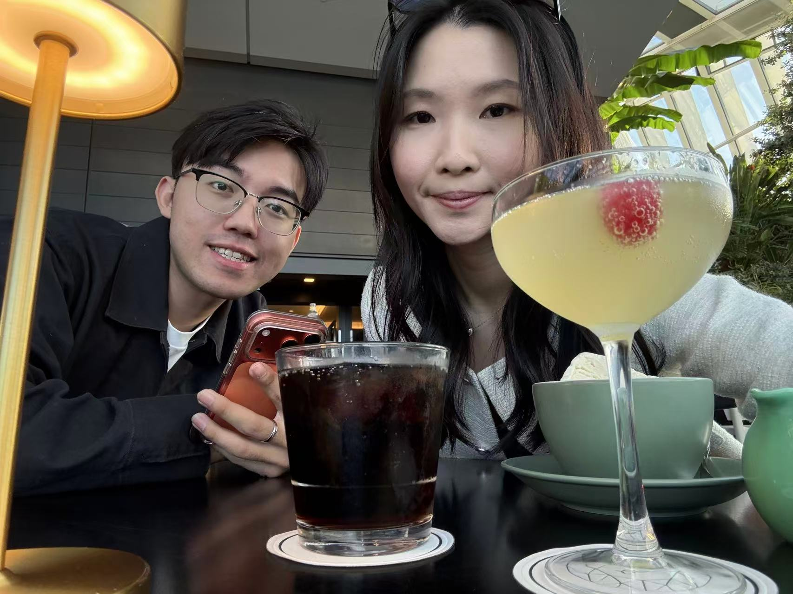

Will you go on a date with me? 💌
Really?! 😳
I'm so happy. Let's plan it.
When are you free? 📅
What shall we eat? 🍜
Where after dinner? 🎡
It's a date! ❤️
DATE PASS
📅 -
🍜 -
✨ -

I'm so happy. Let's plan it.
📅 -
🍜 -
✨ -
